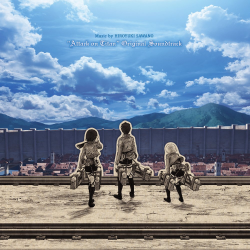

St. Swithin's Day
St. Swithin’s Day, also called St. Swithun’s Day, (July 15), a day on which, according to folklore, the weather for a subsequent period is dictated. In popular belief, if it rains on St. Swithin’s Day, it will rain for 40 days, but if it is fair, 40 days of fair weather will follow. St. Swithin was bishop of Winchester from 852 to 862. At his request he was buried in the churchyard, where rain and the steps of passersby might fall on his grave. According to legend, after his body was moved inside the cathedral on July 15, 971, a great storm ensued. The first textual evidence for the weather prophecy appears to have come from a 13th- or 14th-century entry in a manuscript at Emmanuel College, Cambridge.

Some random information.

This is attack on titan's soundtrack cover of the first season.
This is attack on titan's soundtrack cover of the second season.
This is attack on titan's soundtrack cover of the third season.
This is attack on titan's soundtrack cover of the fourth season.
This is an inspiring quote, or a testimonial from a customer. Maybe it's just filling up space, or maybe people will actually read it. Who knows? All I know is that it looks nice.
-Levi, Captain of the Levi Squad
Call to action! It's time!
Sign up for our product by clicking that button right over there!